繫上歷史記憶的黃絲帶
從林義雄禁語抗議回顧那個噤聲的年代
自林義雄4/22禁食行動開始引起的一連串反核行動，全台許多大學學生響應青年聯合陣線號召的「黃絲帶響應行動」，
在自己的學校裡繫上象徵反核的黃絲帶，成為校園內反核聲音的一景。
圖片來源：高師大性別所，青年聯合陣線提供。
在自己的學校裡繫上象徵反核的黃絲帶，成為校園內反核聲音的一景。
圖片來源：高師大性別所，青年聯合陣線提供。
© 2014 新聞E論壇 版權所有
編輯台報告
4月22日，林義雄以禁食反對興建核四，不僅使核能議題被高度討論，他絕食抗爭的畫面，也與解嚴前的臺灣影像相互重疊。
為了瞭解他，我們開始收集資料，回顧他的人生，我們看見林宅血案、美麗島雜誌社、1992年爭取總統直選公民運動。
今日，我們以報導者身份站在抗爭現場，記錄民主實踐的多元行動，也深受新聞自由所保護，但二三十年前的街頭，對我們來說卻如此陌生。
為了瞭解他，我們開始收集資料，回顧他的人生，我們看見林宅血案、美麗島雜誌社、1992年爭取總統直選公民運動。
今日，我們以報導者身份站在抗爭現場，記錄民主實踐的多元行動，也深受新聞自由所保護，但二三十年前的街頭，對我們來說卻如此陌生。
為什麼我們這個世代無感於上一代人對於林義雄絕食的憂慮憤慨？為什麼我們閱讀並不算長的臺灣史時，總是難以共感？
這一份專題，我們將藉由青年的視野，瞭解為什麼有人為林義雄感動，願意為他發聲。
也透過林義雄的人生，作為探尋臺灣過去白色恐怖歷史的路徑，以他身上遭逢的壓迫與傷痕，連結歷史課本中每一個模糊身影的真實處境。
這並非一份完整的白色恐怖報告書，但我們欲以這份專題化為一把鑰匙，開啟通往那個失落且失語年代的門。
這一份專題，我們將藉由青年的視野，瞭解為什麼有人為林義雄感動，願意為他發聲。
也透過林義雄的人生，作為探尋臺灣過去白色恐怖歷史的路徑，以他身上遭逢的壓迫與傷痕，連結歷史課本中每一個模糊身影的真實處境。
這並非一份完整的白色恐怖報告書，但我們欲以這份專題化為一把鑰匙，開啟通往那個失落且失語年代的門。
同時，這份專題報導我們也參考許多國外案例，企圖以新形態的數位專輯方式呈現，藉由與零傳媒網頁工程師、設計師的協力，
我們一直在想像、實驗並形塑更有挑戰性的媒體形貌。
也盼讀者能不吝於給予我們任何建議，與我們並肩而行。
我們一直在想像、實驗並形塑更有挑戰性的媒體形貌。
也盼讀者能不吝於給予我們任何建議，與我們並肩而行。
最後，能夠完成這份專題，我們十分感謝台灣民間真相調查委員會、鄭南榕基金會、施明德基金會、
慈林教育基金會、邱萬興先生、柯金源先生提供珍貴影像資料與建議。
藉由製作這份專題，我們也一點一點接近我們從未記憶的臺灣歷史，也在撞見郭雨新、陳文成、鄭南榕等名字時，重新與自己的人生脈絡對話。
慈林教育基金會、邱萬興先生、柯金源先生提供珍貴影像資料與建議。
藉由製作這份專題，我們也一點一點接近我們從未記憶的臺灣歷史，也在撞見郭雨新、陳文成、鄭南榕等名字時，重新與自己的人生脈絡對話。
專題企劃
陳貞樺、蔣宜婷
網頁工程
Kirby Wu
( 零傳媒 )
( 零傳媒 )
網頁設計
吳政達
編採團隊
陳貞樺、蔣宜婷、邱彥瑜、林邑軒
梁德珊、李映昕、吳震威
梁德珊、李映昕、吳震威


白色恐怖，黑暗時代
PART III
白色恐怖年代
戰後台灣的白色恐怖，一般以1949年5月19日戒嚴令發布為始，以1987年7月15日解嚴，或以1992年刑法100條的修正告終。1949年與1950年，國民黨把持的立法院分別通過了《懲治叛亂條例》與《動員戡亂時期檢肅匪諜條例》，據此，情治單位得以任意限縮人民的言論自由，壓制任何反對國民黨政權的政治活動。從1950年代的中共地下組織案，到1960年代以來的台獨相關案件，任何站在國民黨政權對立面的政治主張，都是國家機器的敵人。除此之外，情治機構系統性地製造了大量的冤、假、錯、案，逮捕、殺戮了許多無辜人民。根據現有的統計資料，白色恐怖期間有一萬六千多名的政治受難者，其中一千多人遭到槍決。每一筆數字背後，都是一個個破碎的家庭，無數個煎熬悲痛的日子。
1949
基隆中學事件
1953
鹿窟事件
1954
高山族的白色風暴
1969
許席圖與青年自覺運動
1970
泰源監獄案
1977
中壢事件
1979
美麗島事件
1980
林宅血案
1981
陳文成事件
responsive sshl
基隆中學事件
1949
二二八事件後的台灣，瀰漫著恐怖消沈的氣息。然而，目睹國民黨政權殘忍作為的青年志士，紛紛投身於更為激進的改造運動。一條名為地下革命的新戰線，悄悄在島嶼各處蔓延滋生。台籍的中國共產黨員蔡孝乾、張志忠等人，擔負起中共「台灣省工作委員會」的發展工作。短短數年之間，地下組織吸納了日治時代的社會運動者與新一代的台灣青年。時任基隆中學校長的客家人鍾浩東，領導了基隆地區的地下活動。校園內的許多老師、學生，也加入了鍾校長的反抗隊伍。1949年8月起，鍾浩東等人陸續被捕。最後，共有九位教師遭到槍決，多位學生判處感訓與有期徒刑。基隆中學事件，預告了1950年代白色恐怖的到來。
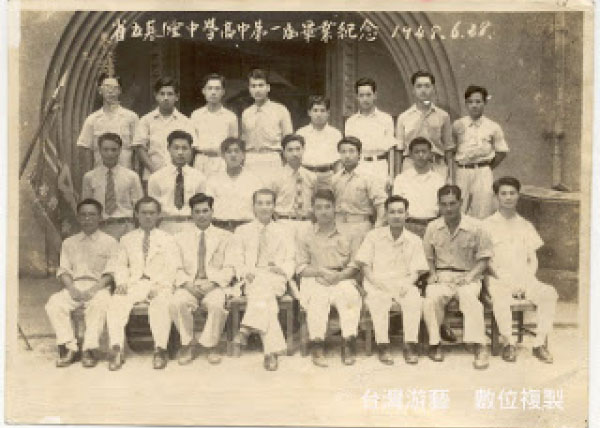
基隆中學高中第一屆畢業照。前排左起：鄭溪北、李旺輝、方弢、鍾浩東、（姓名不詳）、張國雄、（姓名不詳）、藍明谷。中排右二為王春長。
move to bottom
王春長提供，台灣游藝數位複製
資料來源：白色恐怖受難者故事網站
http://2009story.blogspot.tw/2009/02/1.html
鹿窟事件
1953
台北石碇、汐止交界的鹿窟、白雲山區，位於台北市區東南角，群山環繞，山徑複雜。二二八事件後，台北地區參與抗爭的中共地下黨員，透過老家在鹿窟的陳春慶的引介，陸續上山躲藏。當地的居民，並不排斥來自城市的陌生人。相反的，經過一段時間的相處，他們逐漸成為地下組織的協力者與成員。村長、鄉公所職員、地方角頭，一般的農民、礦工，紛紛參與其中。1949年9月，上級幹部決議，將鹿窟指定為台灣北部的武裝基地。鹿窟基地的保密工作非常健全，1950年開始的肅清，並未發現此一據點。直到1952年12月，官方才知悉鹿窟基地的存在，隨即發動上萬名軍警包圍山區，大肆搜捕相關人員。共計有35人遭到槍決，98人判處有期徒刑，上百人自首自新。經此打擊，鹿窟、玉桂嶺等村落，幾乎全村散離。
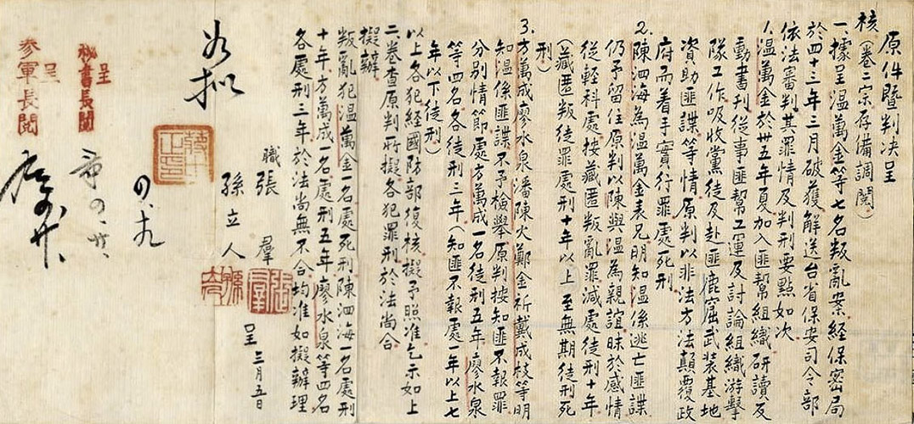
鹿窟事件判決書。資料來源:民間真相調查委員會
高山族的白色風暴
1954
吾雍．雅達烏猶卡那，鄒族人，漢名高一生，阿里山鄉鄉長；巴斯勇‧優路拿納，鄒族人，漢名湯守仁，嘉義縣參議員；樂信．瓦旦，泰雅族人，漢名林瑞昌，台灣省參議員，他們是阿里山鄒族與桃園角板山泰雅族的部落菁英。1950年前後，由日治時代社會運動者簡吉所領導，隸屬於於台灣省工作委員會的「山地工作委員會」，在高山部落尋求可靠的盟友。當時，中共的少數民族自治政策，與部落尋求原住民自決自治的關懷不謀而合，雙方建立了相當程度的結盟關係。因此，1950年代的阿里山，遂成為北部地下黨員南下躲避的重要據點之一。1952年，部落菁英與部分山地青年陸續被捕，三人於1954年4月17日槍決。往後的原住民部落，未再形成跨部落的政治力量。一直要等到三十多年後，台灣的原住民運動，才重新喚醒這個早已夭折的自決之夢。
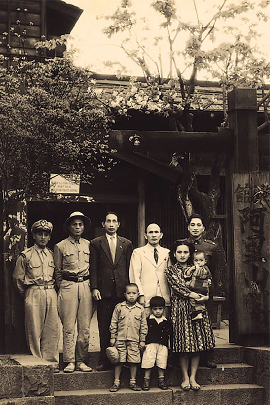
1951年高一生、樂信·瓦旦與湯守仁於阿里山賓館。
資料來源:維基百科
資料來源:維基百科
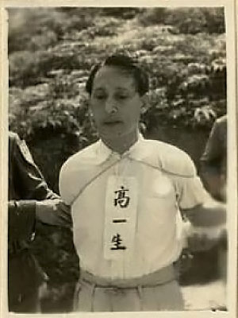
高一生被槍決前照片
資料來源：施明德基金會
資料來源：施明德基金會
許席圖與青年自覺運動
1969
1963年，在台大就讀的美籍留學生狄仁華撰寫的〈人情味與公德心〉一文，刊載在中央日報上，激起了青年學生反省社會風氣的浪潮。以台大為發動點，「青年自覺運動」漸次擴展到大專院校與各級中學。青年學生實踐各種社會服務，身體力行改造社會。來自雲林北港的許席圖，就讀政大法律系期間，曾擔任政大代聯會的總幹事，1966年當選「青年自覺運動推行會」主席，不久後即畢業服役。退役後的許席圖，為籌措自覺會的經費，成立了「統一事業基金會」來募資。與此同時，救國團亦透過管道，希望自覺會能停止運作。1969年2月，國民黨逮捕許席圖等人。許席圖遭受劇烈刑求後精神失常，1977年轉送往花蓮玉里療養院至今。
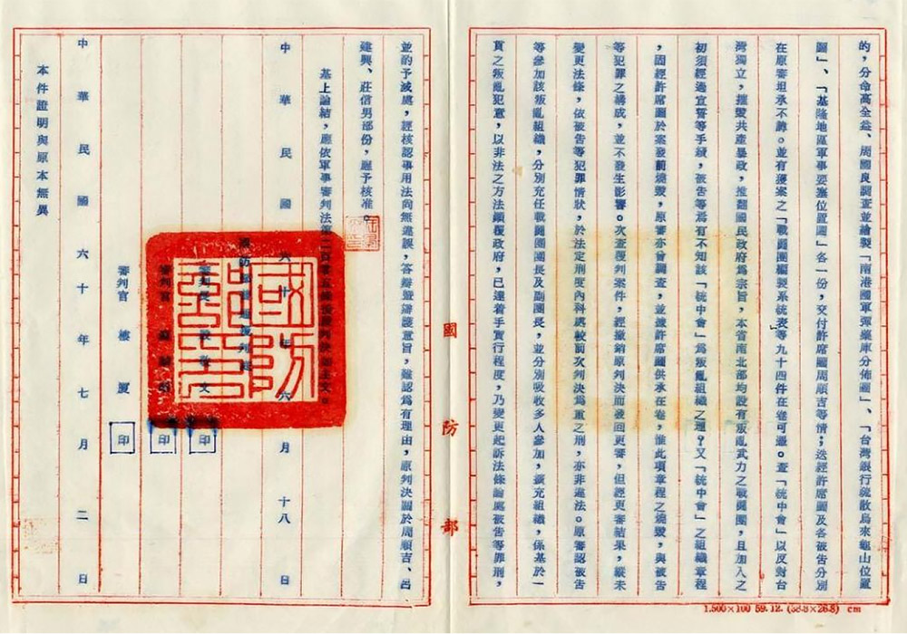
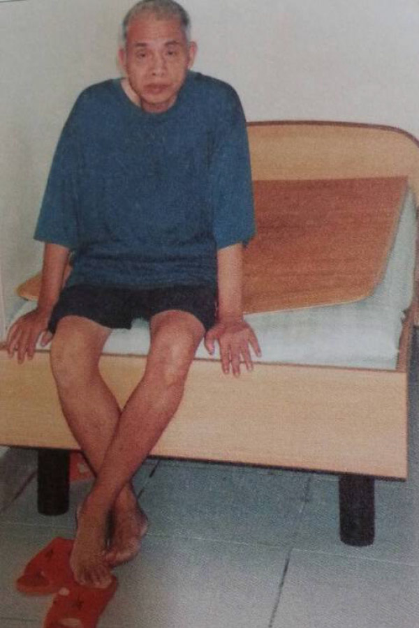
許席圖1969年被捕，因為刑求精神不穩定的關係，被送至精神病院至今。
黃憲東/提供
黃憲東/提供
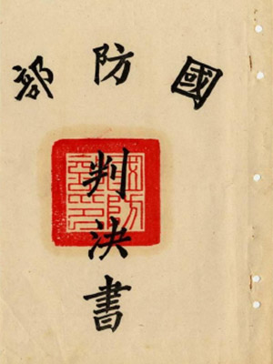
青年自覺運動的判決書內容。
資料來源:民間真相調查基金會
資料來源:民間真相調查基金會
泰源監獄案
1970
位於台東東河山上的泰源監獄，自1962年起，開始關押來自綠島新生訓導處、新店安坑軍人監獄、台北軍法的政治犯。除了1950年代中共地下組織案件的受刑人，1960年代興起的台獨案件政治犯，也加入了政治犯的大家庭。
然而，從台北軍法處看守所移送至泰源的鄭金河等人，正在醞釀一場熾熱的風暴。1966年開始，他們在獄中秘密籌劃武裝革命，企圖推翻國民黨政權。
圖為泰源監獄現況。
攝影／曹欽榮
攝影／曹欽榮
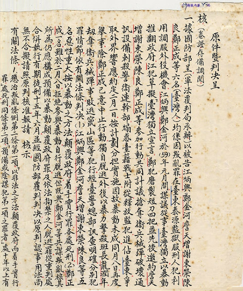
泰源事件判決書內容。
資料來源:施明德基金會
資料來源:施明德基金會
1970年2月8日，鄭金河等人取刀起事，刺傷了帶領衛兵交班的士官長。但因老士官長的呼救而失敗。一行6人棄械逃亡，逃往台東山區，十數日後全數被捕。3個月後，鄭金河等五人遭到槍決。
1970年2月8日，鄭金河等人取刀起事，刺傷了帶領衛兵交班的士官長。但因老士官長的呼救而失敗。一行6人棄械逃亡，逃往台東山區，十數日後全數被捕。3個月後，鄭金河等五人遭到槍決。
中壢事件
1977
中壢事件的主角，是自幼即以當總統為終身志願的許信良，他是國民黨極力栽培的青年領袖。1969年從英國留學歸來後，許信良加入《大學雜誌》的行列，開始批評時政。儘管如此，他仍獲得國民黨的提名，並順利當選1973年的台灣省議員。
1977年，許信良批評國民黨的火力大開，除出版書籍外，更自行參選桃園縣長。11月19日，桃園縣長投票日當天，憤怒的群眾包圍中壢分局，群眾與警方爆發激烈衝突，抗議中壢國小投開票所監選主任的做票行為。
圖為當年包圍中壢分局的消息傳開後，各鄉鎮民眾開始聚集至此。
資料來源:施明德基金會
資料來源:施明德基金會
中壢事件的抗爭，迫使桃園縣所有投開票所重新開票，許信良以九萬票之差，大勝國民黨提名的歐憲瑜。這是自1947年的228事件以來，首次的大規模群眾示威活動。此舉提振了黨外人士的士氣，也稍稍遏止了做票歪風。2年後，許信良參與了聲援余登發的遊行遭到「休職」，美麗島事件期間，人在國外的他，從此成為海外黑名單人士，直到1989年才偷渡回台灣。
圖為當時中壢分局外4、50名員警圍著半圓封鎖阻隔民眾的畫面。
資料來源:施明德基金會
資料來源:施明德基金會
美麗島事件
1979
1960年代以來，參與選舉是黨外人士挑戰國民黨政權僅存的合法管道。選舉期間官方所容許的言論尺度，也較平時寬鬆許多，這是雙方長年對壘摩擦後的默契。但是，1978年12月，美國釋出即將與中華民國斷交的訊息，總統蔣經國宣布暫時停止一切選舉活動，此舉因發黨外人士不滿。
align
右圖為《美麗島》雜誌創刊號，於1979年8月24日發行，第三期發行量即衝破9萬本。
資料來源:鳳凰網
資料來源:鳳凰網
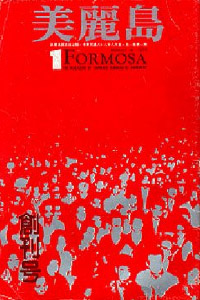
隨後黨外運動領袖余登發被捕，黨外人士在高雄橋頭遊行聲援，進一步升高了雙方對峙的緊張情勢。1979年5月創刊的《美麗島》雜誌，統合了不同路線的黨外人士，此後，美麗島雜誌的相關活動，不斷遭受暴力攻擊與威脅恐嚇。
圖為1979年11月29日，《美麗島》高雄服務處6日被攻擊後再次被砸毀，服務處在外牆上掛上布條表示抗議。
資料來源:施明德基金會
資料來源:施明德基金會
1979年12月10日，美麗島雜誌社預計發起遊行，官方當局從前一日即展開封鎖。遊行當天，鎮暴部隊採取強硬手段，警民發生多起衝突。事後，當局開始搜捕黨外人士，並在隔年3月18日展開審判。並以叛亂罪、意圖顛覆政府為由，將施明德判處無期徒刑，其餘人士判處12至14年有期徒刑。
圖為1979年9月28日，《美麗島》雜誌發行人黃信介於高雄服務處成立茶會上致辭。原圖出自《綠色年代—台灣民主運動25年》，邱萬興先生提供。
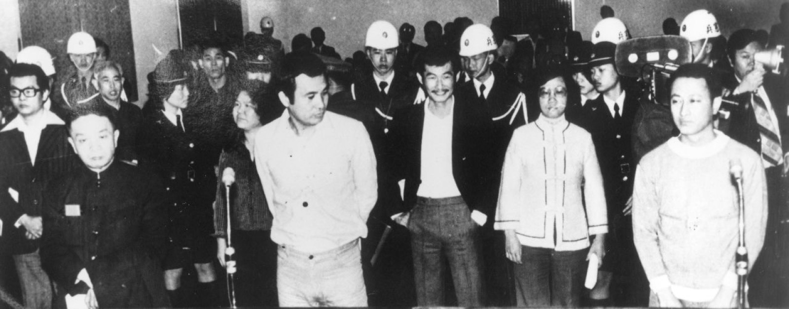
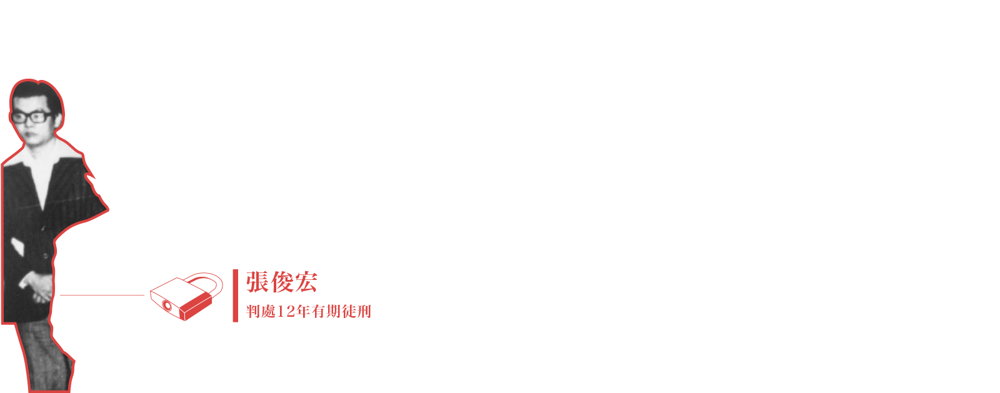
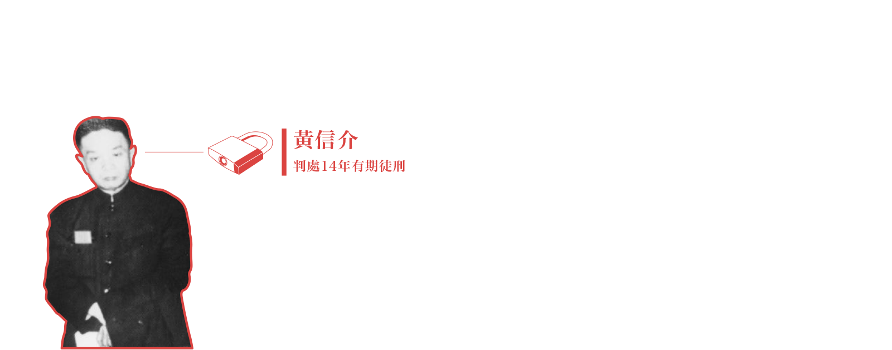
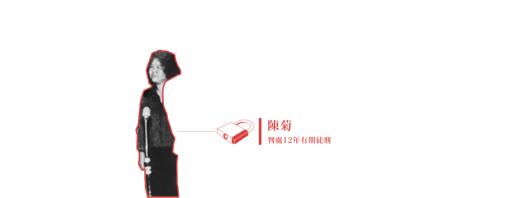
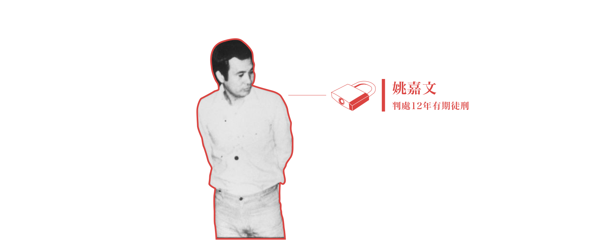
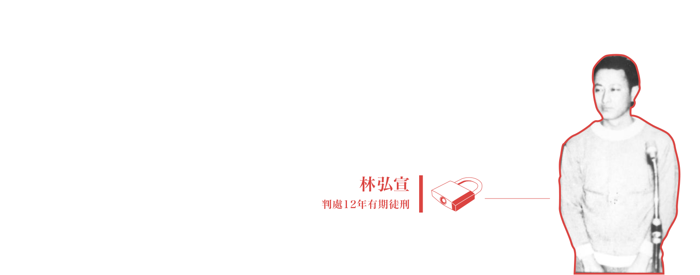
圖片為美麗島大審（1980.3.18 於警備總部軍法處看守所第一法庭）
由左至右：張俊宏、黃信介、陳菊、姚嘉文、施明德、呂秀蓮、林弘宣（林義雄保外奔喪延審，故不在照片中）
資料來源：施明德基金會
由左至右：張俊宏、黃信介、陳菊、姚嘉文、施明德、呂秀蓮、林弘宣（林義雄保外奔喪延審，故不在照片中）
資料來源：施明德基金會
林宅血案
1980
出身宜蘭五結工人家庭的林義雄，早年是一名為扶助貧民弱勢的律師。然而，1975年，宜蘭黨外前輩郭雨新的選舉訴訟，開啟了林義雄的政治生涯。1977年，林義雄以第一高票當選台灣省議員。認真犀利問政的他，很快成為受人矚目的黨外人士。1979年世界人權日的大遊行，林義雄並未參與其中，卻仍遭逮捕。林義雄等人被捕後，為監控黨外人士的動態，特務機構仍舊全天候地監控林義雄等人的住家。豈料，隔年1980年的2月28日，林妻方素敏前往新店安坑軍人監獄探監時，兇手闖入林義雄台北市信義路的住處，持刀殺害了林母林游阿妹及雙胞胎女兒亮均、亭均，身中六刀的長女奐均，急救後逃過死劫。當時國民黨政權暗示兇手為台獨份子或中共人士，並循此方向偵辦。大多數人仍認為，此為國民黨主導之兇殺案，意在殺雞儆猴，恫嚇黨外人士。至今，林宅血案已成歷史懸案。
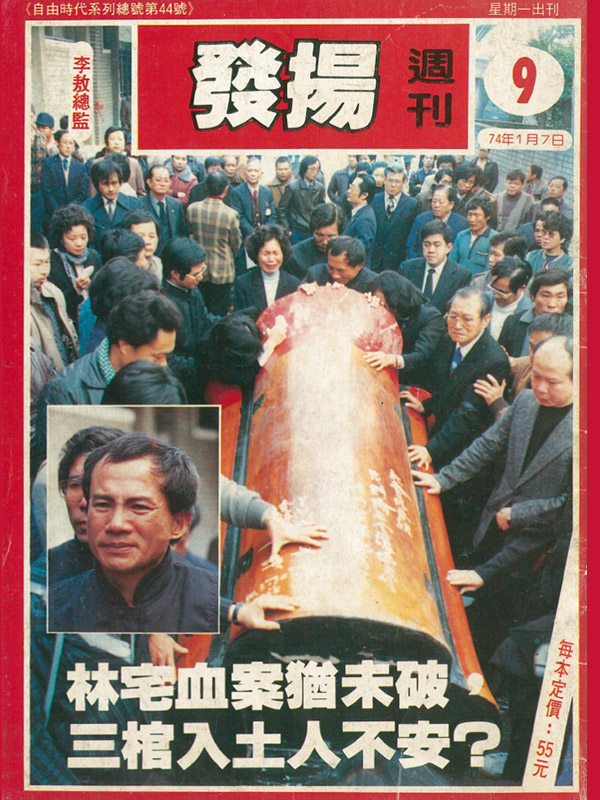
《自由時代》雜誌44期1985年1月7日出刊，當時林宅血案已屆四年而尚未偵破，其中亦大篇幅報導林義雄參加其母親與女兒告別式。
資料提供：鄭南榕基金會。
資料提供：鄭南榕基金會。
陳文成事件
1981
陳文成出生於1950年 ，當時的台灣也正被白色恐怖氛圍所籠罩。求學過程一帆風順的他，在完成台大數學系學業後，於1975年前往美國密西根大學攻讀統計學博士，三年後取得統計學博士，在卡內基美隆大學統計系擔任助理教授。當時台灣一波又一波追求民主化的反對運動，也撼動了遠在海外的陳文成。因此，陳文成參與編編寫全美台灣同鄉會《安雅堡鄉訊》，更創立「民主推動基金」，替美麗島雜誌募款。但這些行為，卻也為國民黨的海外校園間諜（領取國民黨酬勞的職業學生）所掌握。1981年5月，陳文成返台時，即兩度遭到警備總部約談，更於7月2日第二次約談後，行蹤成謎，隔日早晨被發現陳屍於台大校園。各項證據均顯示，陳文成應是他人謀殺致死。這也使得國民黨猖獗的校園間諜和恣意押人問案的情治機構，受到國際社會的高度關注。
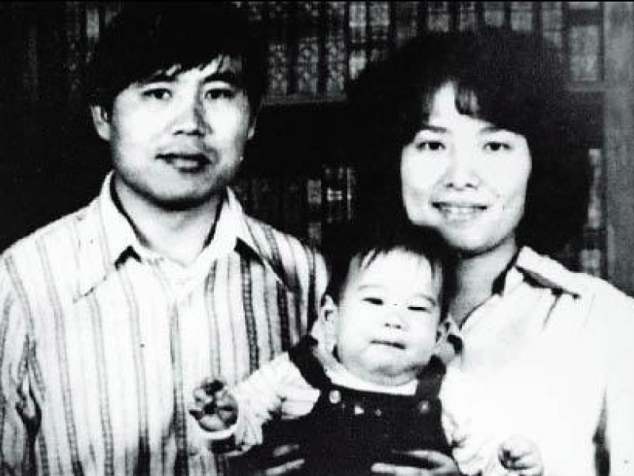
陳文成先生一家人。資料來源:陳文成基金會
陳文成先生一家人。資料來源:陳文成基金會
https://www.youtube.com/watch?v=17o27S4a4-M